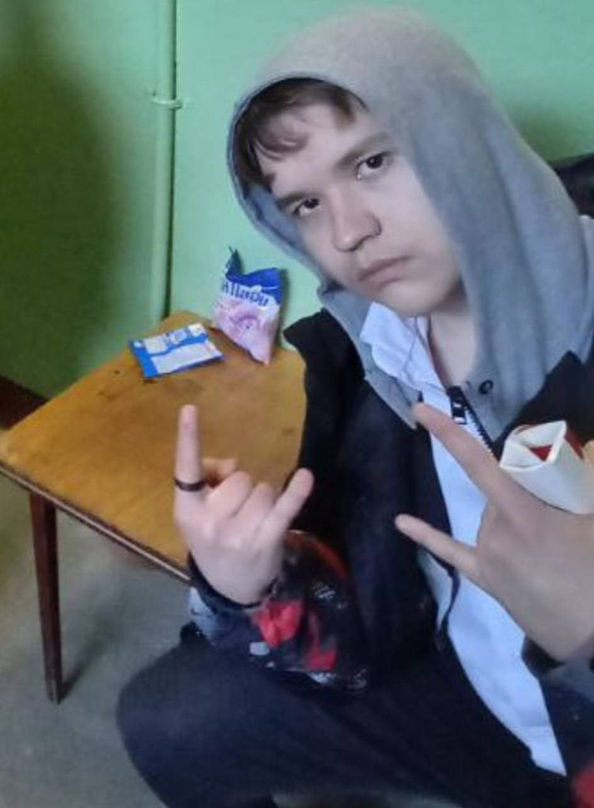
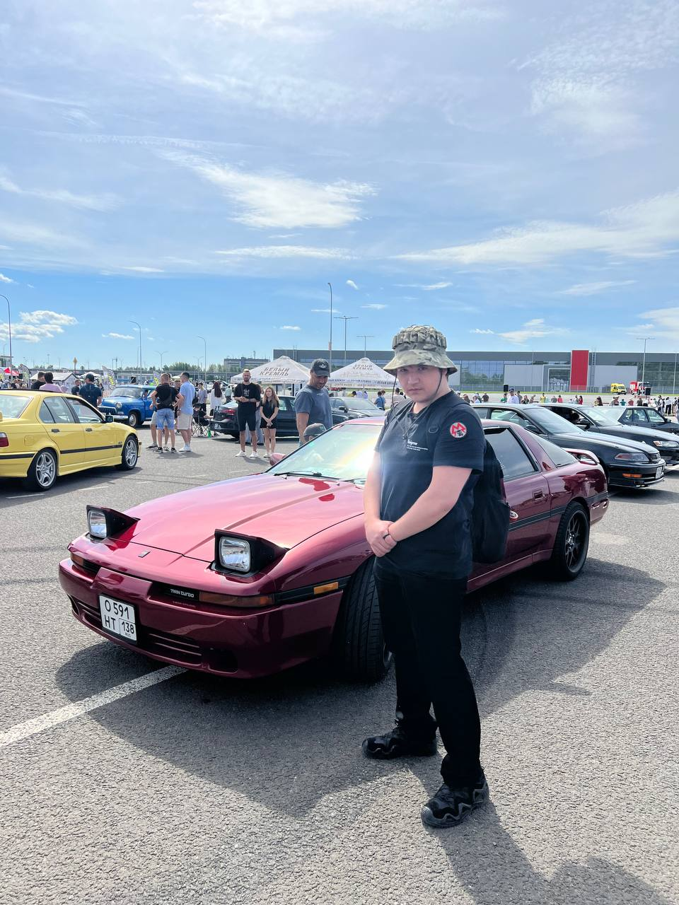
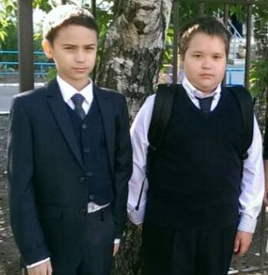
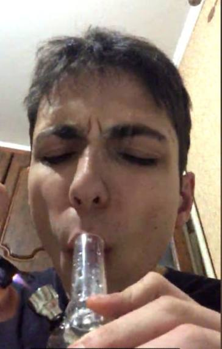

ЖИЗНЬ И ТВОРЧЕСТВО РУСЛАНА ЧИКАЛОВА ЮРЬЕВИЧА))
В маленьком городке жил юноша по имени Руслан Чикалов. Он был тихим и скромным парнем, который всегда мечтал о большом успехе в жизни. Руслан был уверен, что сможет достичь своих целей, несмотря на все трудности.
С самого детства Руслан проявлял удивительный талант к рисованию. Он умел передать на бумаге красоту мира вокруг него и выражать свои эмоции через картины. Родители и учителя обнаружили его талант и всегда поощряли его в творческих начинаниях.
Однако, семейные обстоятельства не позволили Руслану получить художественное образование. Его родители были простыми работниками и не могли позволить себе оплатить обучение в художественной школе. Руслану пришлось идти по другому пути и искать свои возможности.
Руслан решил продолжать рисовать самостоятельно и развивать свое мастерство. Он проводил дни и ночи, создавая потрясающие произведения и исследуя различные стили и техники. Руслан никогда не терял веру и мечтал о том, чтобы его работы были увидены широкой аудиторией.
Однажды Руслан узнал о конкурсе художественной выставки, на которую можно было подать заявку. Это была его шанс показать свои работы миру. Руслан подготовил свои лучшие картины и отправил заявку на участие.
Несколько недель спустя Руслан получил письмо с уведомлением о том, что его работы были приняты и будут выставлены на самой престижной художественной выставке в городе. Для Руслана это было невероятной радостью и подтверждением его таланта.
На выставке Руслана заметили критики и коллекционеры искусства. Они были поражены его творчеством и видели в нем огромный потенциал. Руслан получил предложение о сотрудничестве с галереей и возможности продать свои картины.
Это был прорыв в жизни Руслана. Он стал признанным художником и его работы стали цениться и покупаться коллекционерами. Руслан стал путешествовать по разным странам, выставлять свои картины и вдохновлять других талантливых художников.
История Руслана Чикалова - это история о том, что настоящий талант и настойчивость всегда находят свой путь к успеху. Руслан не ограничился трудностями и не отказался от своих мечтаний. Он продолжал творить и верил в свои возможности, что привело его к заслуженному признанию и уважению. Поддержать!!!



